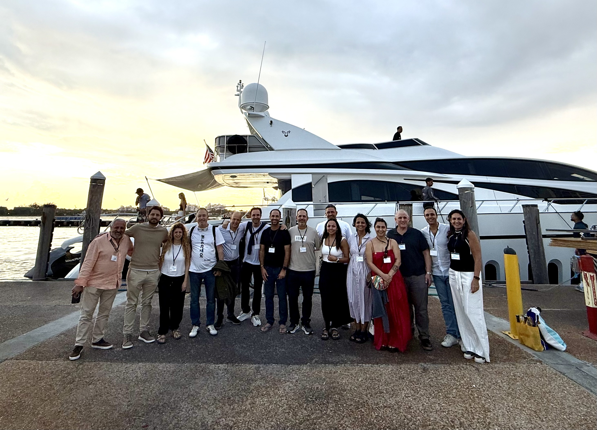
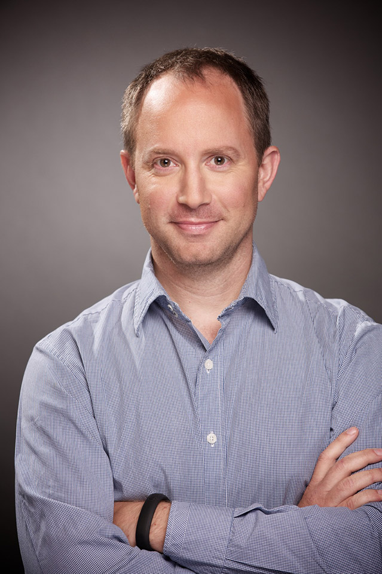
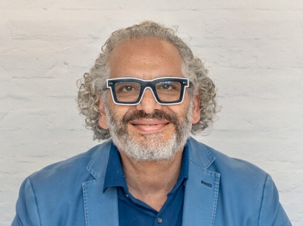
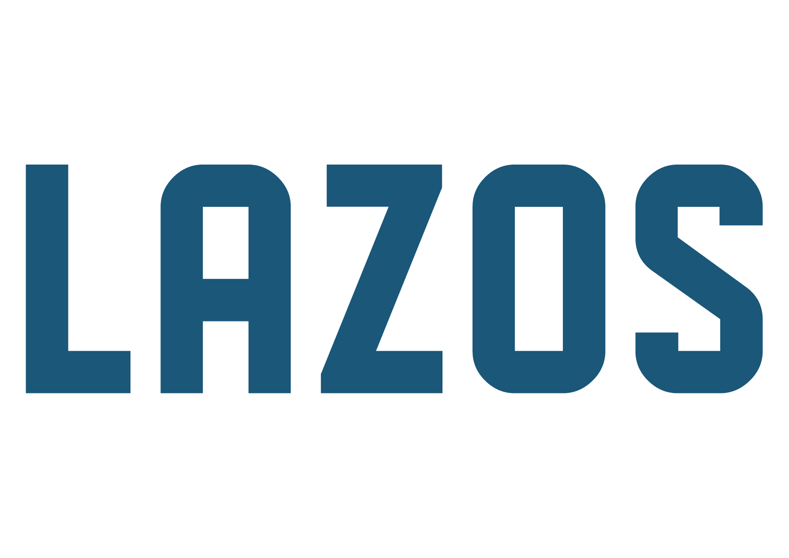
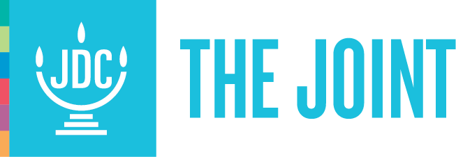

Red Judía de Filantropía Estratégica en América Latina
Una comunidad de líderes que transforma la generosidad en acción estratégica: conectada, reflexiva y comprometida con el impacto de largo plazo.

Una comunidad de líderes que transforma la generosidad en acción estratégica: conectada, reflexiva y comprometida con el impacto de largo plazo.
¿Qué es RFE?
RFE conecta líderes de distintos países para compartir experiencias, profundizar en sus marcos de acción y construir juntos una filantropía más intencional, más estratégica y más transformadora.
Es un espacio entre pares: de escucha genuina, pensamiento crítico y colaboración real. Un lugar donde quienes ya dan quieren dar mejor.
¿Por qué existe RFE?
Con frecuencia opera de forma fragmentada, reactiva y sin los mecanismos de aprendizaje colectivo que multiplicarían su alcance.
No se trata solo de cuánto se da, sino de cómo, con quién y con qué visión. La filantropía estratégica comienza con la pregunta correcta.
Cuando filántropos se conocen y piensan juntos, el impacto se multiplica. La red no es un beneficio adicional —es la condición del impacto.
Construir una cultura filantrópica madura requiere tiempo, red y continuidad. RFE es ese compromiso.
RFE en números
¿Qué hacemos?
Líderes filantrópicos de toda América Latina, tejiendo una red regional de confianza y propósito compartido.
Espacios de encuentro, diálogo y reflexión donde las preguntas difíciles se hacen en voz alta.
Aprendizajes, modelos, fracasos y buenas prácticas entre pares que entienden que la inteligencia colectiva supera a la individual.
Colaboraciones concretas: proyectos conjuntos, sinergias estratégicas y una visión común del impacto duradero.
Una red en movimiento
Desde su fundación, RFE ha reunido a filántropos judíos de toda América Latina en encuentros diseñados para ir más allá del networking: espacios de debate profundo y compromisos reales.



RFE no para de crecer — su próximo capítulo está siendo escrito por quienes hoy deciden formar parte.
Referentes
RFE convoca a figuras de primer nivel para abrir conversaciones que no ocurren en cualquier espacio. Expertos en filantropía estratégica, tecnología e innovación que han acompañado el pensamiento de la red.
 25 de marzo de 2025
25 de marzo de 2025
Ex Presidente de las Andrea and Charles Bronfman Philanthropies y figura de referencia en la filantropía judía internacional. Impulsor de Birthright Israel y asesor de algunos de los donantes más influyentes del mundo judío.
 17 de marzo de 2025
17 de marzo de 2025
Presidente y CEO de la Jim Joseph Foundation. Una de las voces más influyentes en filantropía estratégica en Estados Unidos, con foco en educación judía e impacto de largo plazo.

26 de mayo de 2026CEO y cofundador de Botmaker. Ex director de Facebook y Google para Hispanoamérica. Referente en tecnología e innovación aplicada al sector social y filantrópico.
Artículos

Creo fervientemente en las redes como el mecanismo de relacionarnos, de estar juntos y de unirnos. Durante siglos, nuestras comunidades se organizaron como fortalezas: cada institución, un edificio sólido, con límites claros, con identidad propia, con un adentro y un afuera bien definidos. Ese modelo nos permitió sostenernos, preservar nuestras tradiciones, transmitir el valor del estudio, de la comunidad, de la responsabilidad compartida.
Comunidad y aliados
RFE articula su trabajo con organizaciones líderes en filantropía y comunidad judía a nivel regional e internacional:


.png)


Contacto
Si lideras iniciativas filantrópicas y crees que el impacto se multiplica cuando actuamos en comunidad, RFE es tu espacio. Escríbenos: queremos conocerte.
Quiero formar parte